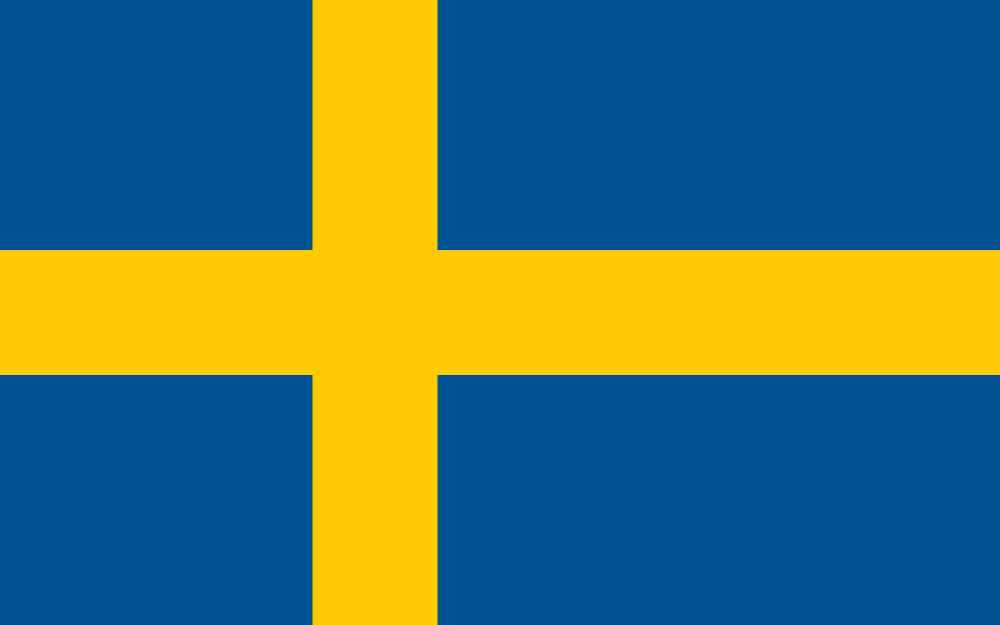
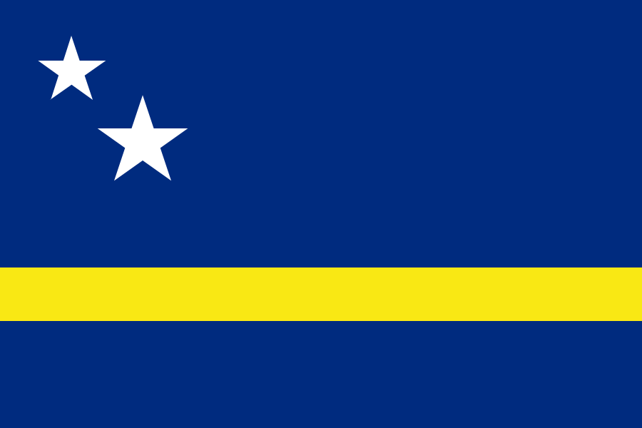
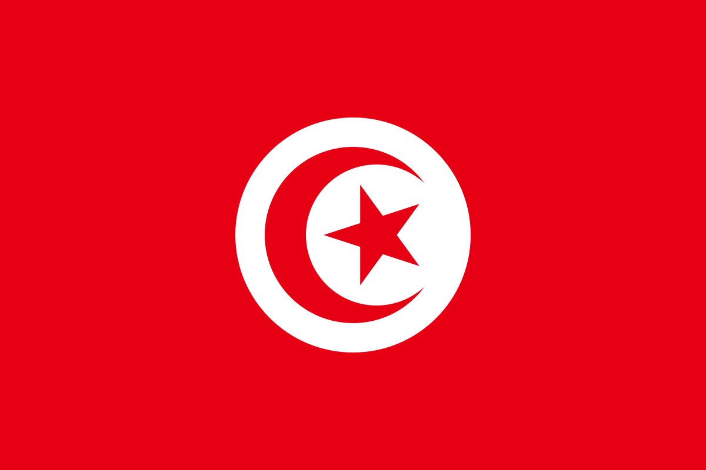
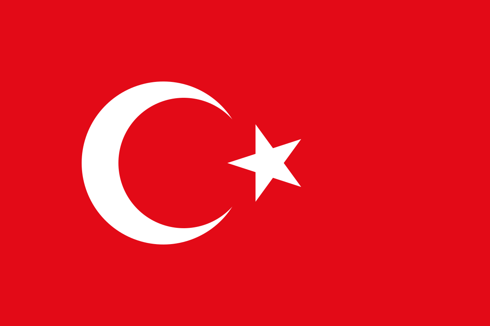

Le partite di oggi
Esito, mercati gol, tiri, corner e gerarchia ammoniti. Apri la partita per leggere l'analisi completa.
Da giocare
19:00 · Gruppo F
 Olanda
2-1
Olanda
2-1

SveziaQualita olandese contro Isak e Gyokeres
Goal e Over 2,5 coerenti con quote e formazioni offensive.
Leggi l'analisi22:00 · Gruppo E
 Germania
2-1
Costa d'Avorio
Germania
2-1
Costa d'Avorio
La Germania crea di piu, ma non sara comoda
Musiala e Wirtz contro una Costa d'Avorio molto solida.
Leggi l'analisi02:00 · Gruppo E
 Ecuador
3-0
Ecuador
3-0

CuracaoEcuador nettamente favorito
Quote corrette: 1.12, Over 2,5 a 1.48 e No Goal a 1.40.
Leggi l'analisi06:00 · Gruppo F

Tunisia 0-1 GiapponeGiappone favorito, Tunisia molto bassa
No Goal e Under 2,5, con Kovacs che alza il rischio cartellini.
Leggi l'analisiConcluse
Finale · Esito esatto
 USA
2-0
USA
2-0
 Australia
Australia
USA solidi, Australia senza gol
Presi vincente, No Goal, corner USA e Australia piu ammonita.
Leggi l'analisiFinale · Pronostico errato

Turchia 0-1 Paraguay
Paraguay
Turchia favorita, Barton alza i cartellini
La Turchia domina 32-7 nei tiri, ma Galarza decide al 2'.
Leggi l'analisiFinale · Pronostico esatto
 Brasile
3-0
Brasile
3-0
 Haiti
Haiti
Brasile, volume e pressione continua
Vittoria larga, 18-23 tiri e forte vantaggio nei corner.
Leggi l'analisiFinale · Pronostico esatto
 Scozia
0-1
Scozia
0-1
 Marocco
Marocco
Il Marocco prova a controllarla
Under 2,5, Marocco piu corner e Bouaddi primo ammonito.
Leggi l'analisi